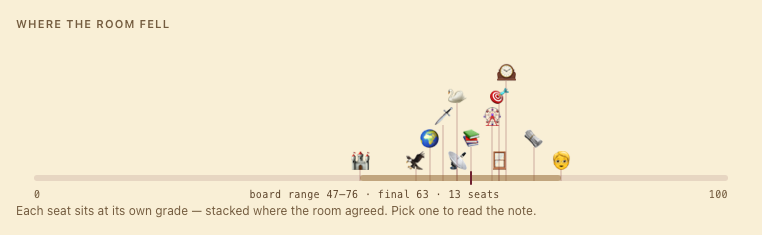
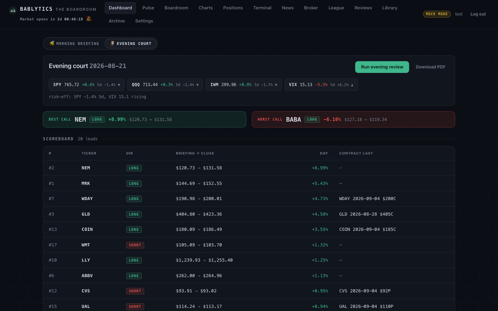
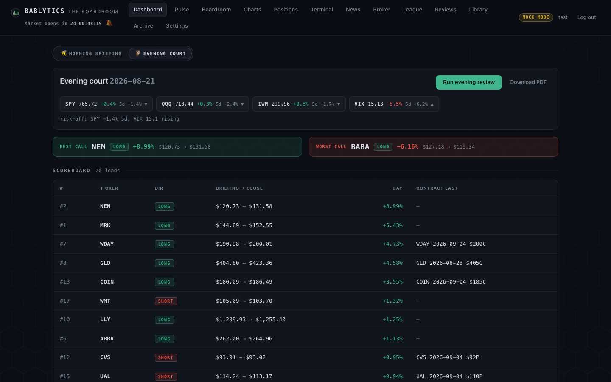

Desk · the home screen
The Dashboard Workspace
The live morning book as a grid of panels you arrange: lead cards with live levels and the board's range, the expanded lead with its consensus strip, the Morning | Evening toggle that is also the day/night switch, the bell, and the memo read aloud.
The Dashboard is the first thing you see after you sign in and the page the rest of the app points back to. It shows the latest morning run — the memo, the twenty leads split into a stock desk and an options desk, and the day's context panels — laid out on a grid you control. A segmented toggle at the top switches the same route between the Morning briefing and the Evening court; that toggle is also the app's day/night theme switch. Everything on this page is read from the local database and repainted in place; nothing on it places, stages or routes an order.

Anatomy of a lead card#
Each lead in the morning book is one card. Reading top to bottom, a card carries exactly these parts (from leadCardHTML in web/app.js):
- TAKE chip (top-left corner) — marks the lead as a trade you actually took; see Positions & trades. A taken card gets an accent ring.
- Pre-open action chip (corner) — after the 9:15 Pre-Open Check, the Executive's per-lead order (hold / exit / trim / upgrade / watch) sits on the card.
- Rank, direction badge, final grade — LONG or SHORT, and the Executive's final grade 0–100 coloured on the grade ramp.
- Ticker, and on the options desk the selected contract line (expiry, strike, C/P) with its days-to-expiry.
- Grade bar, then the board-range rail (below).
- Thesis — the one-line auto-generated setup, clamped to two lines.
- Stats —
VOL(option volume ÷ open interest),C/P(call/put volume ratio),5D(five-day price change). - Levels strip —
ENTRY · NOW · STOP · TARGET, plusPREMon option cards (below). - Realized outcomes —
1d/5dchips once the 16:45 outcomes job has recorded them.
A card is a button: click it, or focus it and press Enter or Space, to open the expanded lead.
Live levels: entry, now, stop, target#
The briefing document bakes Entry / Now / Stop / Target into the day's PDF at render time. The cards carry the same five numbers live. They come from GET /api/levels?run_id= (bablytics/routes_levels.py), which paints the strip muted first and fills it in when the call answers, so a card never changes height. What each cell means:
- Entry
- The briefing price for the lead — the anchor everything else is measured from.
- Now
- The live last print, with the signed percentage from entry.
- Stop / Target
- An ATR exit zone, not a forecast and not the board's written invalidation. It is arithmetic: entry ± a multiple of ATR(14), direction-signed, using the same
EXIT_ZONE_ATRtable the Pulse uses for your risk profile — conservative 1.0 / 1.5, moderate 1.5 / 2.5, aggressive 2.0 / 4.0 ATR for stop / target. The tooltip on the strip says so and shows the ATR. - Prem
- Option cards only: the contract's own live premium from the chain. On an option card entry / now / stop / target describe the underlying, because those are the invalidation prices; Prem is the contract mark.
The payload is cached in-process for about 45 seconds per run, so repaints, tab switches and a second window do not re-hammer the market-data source. A ticker or contract that fails to price degrades that cell to a dash; the rest of the strip still renders.
The board-range rail#
Under the grade bar sits a thin 0–100 track with a gold band from the room's lowest to highest grade and a pin at the Executive's final grade, captioned board range 47–76. The numbers come from a per-lead grade_stats aggregate (min, max, mean, n, spread) that rides on the run payload. Older runs recorded before that aggregate existed simply show no rail. The rail's accessible label reads the range, the final grade and the grader count aloud.
The expanded lead#
Opening a card raises an overlay with everything the board said about that one name, in this order: the header (rank, ticker, direction and instrument badges, briefing price, the TAKE toggle, the final grade), the grade bar and board-range rail, the levels strip, the thesis, the Executive summary, the selected contract row on option leads, a Snapshot of stat tiles (price, 1d, 5d, RSI 14, vol/OI, C/P), the technicals block, the notable contracts table from the scan, the consensus strip, the Board grades list (one row per grader: emoji, name, stance, grade chip, comment, key-risk tags), the Skeptic's rebuttal callout, the matched news links, and realized outcomes when they exist. Esc closes it.

The consensus strip: where the room fell#
Below the snapshot, every seat that put a number on the board — the thirteen graders and the Skeptic, each when it has a grade on record — is placed at its own grade on one 0–100 axis, with a band from lowest to highest and a pin at the final grade. Ties are the norm (half the room lands on 55), so colliding emoji stack into vertical lanes: each keeps its true horizontal position and drops a stem to the axis. Nobody is nudged off their number and nobody is dropped.

The jump is a real anchor (#lead-<id>-member-<key>) so it works from the keyboard and for screen readers; the highlight honours prefers-reduced-motion.
Morning briefing | Evening court#
The segmented toggle at the top of the live dashboard switches between two views of the same day. Morning briefing is the grid above. Evening court shows the close-of-day index strip and regime line, a best call and worst call, the scoreboard of the day's leads (briefing price → close, direction-adjusted day return, the contract's last price on option leads), and "The Court Speaks" — one card per member with their ON BASE / OFF BASE / LESSON entry. Before the first review it says the court has not yet convened and offers Run evening review; both views carry a Download PDF button. What the court does is on the Evening Court page; the PDFs are password-encrypted (see Reviews & horizons).

#/run/<id> always open in the morning view.Day and night#
There is no separate theme control. Choosing Morning briefing renders day mode — the hive at work, honey gold and maroon — and choosing Evening court renders night mode, the black-and-green Court of Owls terminal. The choice persists in the browser under bablytics_theme_mode and is applied at boot, on the sign-in card too. Every colour in the app lives in a CSS custom property, a honeycomb tessellation seeps through the background in both tints, and the canvas charts re-read the computed tokens and repaint on a bablytics:theme event so they recolour live. Green and red stay the only carriers of long/short and P&L sign, and values are always printed as numbers, never colour alone.

The workspace grid#
Every section of the live morning dashboard is a panel on a 12-column grid driven by web/dashgrid.js. The panels, with the ids that key their saved layout and their first-run defaults:
| Panel | Id | Default | What it holds |
|---|---|---|---|
| Morning memo | memo | span 6 · collapsed | The run header, index chips, regime line and the memo — with the Listen control. |
| Pyramid leader | leader | span 6 · collapsed | Who is "in charge of the world today" and their latest lesson; links to the Boardroom. |
| Pre-open check | preopen | span 4 · collapsed | The 9:15 verdict and memo update. |
| Midday check-in | midday | span 4 · collapsed | The 12:30 card with its own Run button. |
| The Bailiff | bailiff | span 4 · collapsed | Today's rulings and their status. |
| Stock desk | stocks | span 6 · two row-shares | The ten stock leads. |
| Options desk | options | span 6 · two row-shares | The ten option leads. |
A section with nothing to show today is simply not registered; when it comes back it slots in again without corrupting the saved layout. Nothing is hidden by default — a hidden panel is a panel you do not know exists.
Fit to window and flowing page#
Fit to window (the default) sizes the grid to the viewport minus the header, footer and a small bottom margin; the page does not scroll, and each panel body scrolls internally with a fade when there is more below. Rows are not uniform: a row whose panels are all collapsed shrinks to its headers and hands its height to the rows that still hold something open — collapse six of seven panels and the survivor gets nearly the whole window. Flowing page is the classic document: panels stack full-width and the page scrolls. The Evening court view and archived runs always use the flowing layout.
Moving and sizing panels#
Drag a panel by its header to reorder it (a press on the chevron, a resize handle or any control in the header never starts a drag). Grab the right-edge handle to change its width in single-column snaps and the bottom-edge handle to change its row span. Keyboard parity is built in — with a panel header focused:
| Keys | Action |
|---|---|
| ← / → | Move the panel one slot. |
| Home / End | Move it to the first / last slot. |
| ↑ / ↓ | Row span −/+. |
| Shift + any arrow | Width (span) −/+. |
| Enter / Space | Toggle collapse. |
The resize handles are focusable separators and respond to the arrow keys too. The drag animation and the focus flash are disabled under prefers-reduced-motion.
The Layout menu#
The Layout ▾ button on the dashboard toolbar opens a menu that lists every panel with a checkbox to show or hide it and a name you can click to jump straight to that panel (it scrolls into view, flashes and takes focus); then Collapse all / Expand all; a Fit to window / Flowing page toggle; and Reset layout. Esc closes the menu and returns focus to the button. The whole layout, mode included, persists in the browser under bablytics.dash.layout.v1; a stored entry for an unknown panel id is dropped, and unparseable storage falls back to the default layout without throwing. If the layout engine fails to load, the dashboard falls back to the flowing document — a missing script never costs you the page.
The header#
- Market countdown — time to the next US regular-session open (9:30 ET, Mon–Fri). US holidays are not accounted for; the element's tooltip says so.
- The bell 🔔 —
web/bell.jsrings the opening bell at 9:30:00 ET (three bright strikes) and the closing bell at 16:00:00 ET (two lower strikes) on weekdays, synthesized with the Web Audio API: no audio files, nothing downloaded. Browsers refuse to make sound until you interact, so the toggle click is the unlock — it also rings a preview strike. One ring per event; a tab opened at 9:34 does not get a stale opening bell; weekends stay quiet; holidays again are not known. The on/off choice persists underbablytics_belland is off until you switch it on. - mock mode pill — shown whenever no API key is configured, so you always know which board you are talking to.
- Guide — the last nav entry opens this site inside the app at
/about/.
Above the grid, the dashboard also surfaces context strips when they apply: "👑 name runs the world today" (the pyramid leader, linking to the Boardroom), "✍️ N trade reflection(s) due" (linking to MY TRADES), "🧾 N orders staged — review in Broker" (linking to the Broker queue), and fresh weekend reports from the Reviews engine.
Listen: the memo, read aloud#
The Morning memo panel carries a ▶ Listen control. It reads the memo with the browser's own speechSynthesis through web/speech.js — no API key, no per-play cost, and the memo never leaves the machine. If the engine or the module is missing, no control is rendered rather than a dead button.

- Voice
- Ranked male and authoritative first — Daniel, Alex, Google UK English Male, Microsoft Guy, Microsoft David, Aaron, Tom, Fred, Rishi, Oliver, then any English voice on a known-male list, then the platform default. The pick is named in the UI; the picker groups "Male voices", "Other voices" and the novelty voices a Mac ships (Bahh, Zarvox, …) last. If no male voice exists on the machine the control says so plainly instead of quietly reading in whatever is there. Your override persists under
bablytics_speech_voice. - Rate
- 0.7×–1.3×, default 0.95× (a touch below default reads as more deliberate); persists under
bablytics_speech_rate. - Sentence by sentence
- Chromium silently stops after about fifteen seconds of one continuous utterance, so the module speaks one utterance per sentence, each queued on the previous one's end — which also gives the "4 of 42" progress for free.
- The normaliser
- Financial prose is rewritten before it is spoken: bare tickers are spelled (
XOM→ "X O M") unless they are on a read-as-word list (CPI, FOMC, ETF, ATR, VIX, RSI, …);$187.9Bbecomes "one hundred eighty seven point nine billion dollars";-8.2%keeps its sign as "down eight point two percent";META 2026-08-21 $535Preads as a date, a strike and "put"; ISO dates, ranges, slashes and markdown symbols are handled. The module exposesprepareForSpeech()and a self-test. - Lifecycle
- Every route change, logout and repaint stops the engine — nobody wants yesterday's memo narrating over today's.
Keyboard summary#
| Where | Keys | Action |
|---|---|---|
| A focused lead card | Enter / Space | Open the expanded lead. |
| Overlay or Layout menu open | Esc | Close it (the menu first, then the overlay). |
| Panel header focused | arrows, Home/End, Enter | Move, size, collapse (table above). |
| Archive day view | [ / ] | Previous / next day (see the Archive). |